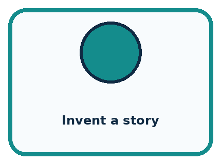
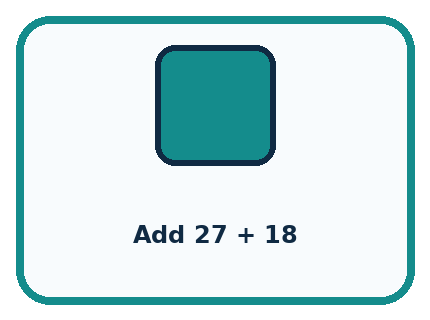
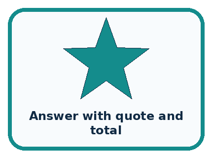

AI Academy · Level 1 · Grade 6 · Week 25 · Student lesson
Generate, Retrieve, or Calculate?
Learn to understand, design, build, test and explain AI systems responsibly.
Project: Helpful Classroom Sorter
THE CONNECTED WEEK
Retrieve the facts. Calculate the result. Review the wording.
Trace mixed answers, inspect source versions and catch unsupported details without guessing methods from fluent text.
Keep one habit: Keep source facts → derived results → proposed wording distinguishable.
Main lesson · Section 1
Which operation produced each part of the answer?
Separate source facts, derived results and proposed wording.
Start with a mixed answer
A friendly invitation can mix a stored room number, a calculated number of places and newly proposed wording. Check each part using the evidence appropriate to the operation that produced it.
Recall the minimum necessary input
You need a chart of three fictional topic totals. Why should a named pupil spreadsheet not be the default input?
Close your notes first. A rough first answer helps us choose the right starting point; it is not a score for your ability.
After trying, check the relevant lesson or ask your teacher. Change the part of your explanation that the evidence shows was wrong.
Your learning goals
I can distinguish retrieving a record, calculating from inputs and generating wording.
I can trace a task that combines these operations and check each step.
I can identify unsupported details and explain why output appearance does not reveal its method.
Earlier wording, alternatives and picture transcripts
Your learning target
Remember before reading
Without opening the old lesson, explain one key idea from Privacy by Choosing Less. Give an example and a mistake that the idea helps you avoid.
Without opening the old lesson, explain one key idea from Missing and Unbalanced Examples. Give an example and a mistake that the idea helps you avoid.
Without opening the old lesson, explain one key idea from Similarity. Give an example and a mistake that the idea helps you avoid.
Different systems create, look up, or compute answers in different ways.

LEARNING TARGET Three tasks are: invent a school motto, find the exact fire-drill meeting point in a supplied handbook, and divide 84 stickers among 7 teams. Choose generation, retrieval or calculation for each.
Which outputs need checking?
Learner name:
Readiness for the connected explanation
This week’s end goal
By the end, I can separate retrieval, calculation and generated wording.
Main lesson · Section 2
Meet the current makers-club notice
Use the supplied fictional records, without an account or live search.
Define retrieval, calculation and generation
Three tasks can produce similar-looking text while doing different work. Retrieval finds existing information. Calculation applies mathematical operations to input values.
Generation produces content using a model and the context it receives. A single application can combine all three, so the label AI does not tell you which step happened.
Read N2 and its explicit replacement of N1
Our fictional makers club has a current notice N2: Wednesday, Room 4, six tables with four places at each table, and three places reserved for helpers. An older notice N1 says Room 2. N2 explicitly replaces N1 for this event.
These records are invented for this lesson; no search, account or real booking is needed.
Match each question to its operation
To answer “Which room does the current notice list?”, find N2 and return Room 4 with the record identifier. That is retrieval. To answer “How many places remain after the helper reservation?”, use 6 × 4 − 3 = 21.
That is calculation. To suggest a friendly invitation, generate wording and check that its factual details agree with N2.
Earlier wording, alternatives and picture transcripts
PICTURE STORY
Look Closely Before You Explain
Pictures give clues; evidence tells us what the clues mean.

MYSTERY A story generator creates new wording, a library search retrieves a stored title, and a calculator computes a result from stated operations.
What do you notice?
Name three visible details without explaining them yet.
Circle the detail most connected to the system's decision.
Name one detail that may be decoration or distraction.
Make a first prediction and state the clue that supports it.
My observations, prediction, and evidence:
GOOD THINKING A prediction can change when stronger evidence appears.
A closer explanation
Main lesson · Section 3
Trace facts, arithmetic and wording separately
Check the source version and whether the expression answers the actual question.
Follow the three-operation trace
One club task with three kinds of work
Inspect which notice governs this task
Retrieving N1 accurately would still give an outdated room for this task. Successful retrieval means finding a record, not proving that every record is correct or current. Check the event, source and version.
Here the explicit replacement statement tells us which notice governs the classroom example.
Distinguish total from remaining places
A calculator given 6 × 4 correctly returns 24, but 24 is the total capacity, not the number remaining after three reserved places. Correct arithmetic on an incomplete expression answers the wrong question.
Explain the input values, units and operations before accepting a number.
Point to the input, the deciding step and the result in this week’s visual. Explain the same step in ordinary words. A picture helps when you can say what each part represents.
Earlier wording, alternatives and picture transcripts
VISUAL MECHANISM
Input → Process → Output
Follow the information instead of imagining magic inside the machine.


INPUT question and available sources or rules
PROCESS generate patterns, retrieve records, or calculate
OUTPUT answer with mechanism-appropriate checking
CORE IDEA Different systems create, look up, or compute answers in different ways.
UNDER THE HOOD Generation synthesizes outputs from learned distributions, retrieval selects stored records, and calculation applies formal operations.
Products often combine all three; verification should match the component that produced each claim.
Draw a fresh example with all three stages:
A closer explanation
Connect the picture and the explanation
Main lesson · Section 4
Compare operations and their checks
Similar-looking text can have different evidence paths.
Pictures paired with their evidence


The case to investigate
CASE 1 — Invent a story Clue: new wording from patterns. Meaning: generate.



The case to investigate
CASE 3 — Add 27 + 18 Clue: apply arithmetic. Meaning: calculate.


The case to investigate
CASE 4 — Answer with quote and total Clue: multiple components. Meaning: mixed system.
Discuss the confusing pair
Which two pictures are easiest to confuse? What evidence separates them?
Keep the limit in view
BOUNDARY Fluent wording does not reveal whether a fact was retrieved, generated, or calculated.
Earlier wording, alternatives and picture transcripts
PICTURE GALLERY
Four Cases, Four Clues
Use the visual cue, then read the evidence carefully.
CASE 1 — Invent a story Clue: new wording from patterns. Meaning: generate.
CASE 2 — Find a book title Clue: return catalog record. Meaning: retrieve.
CASE 3 — Add 27 + 18 Clue: apply arithmetic. Meaning: calculate.
CASE 4 — Answer with quote and total Clue: multiple components. Meaning: mixed system.
Change one thing in the pictured case
Change: Reserve four places instead of two, keeping the room and day unchanged.
Prediction: Eight learner places remain.
Reason: 3×4−4=8; this changes capacity for learners, not the retrieved date or location.
Main lesson · Section 6
Trace the separate craft invitation
Use approved record C and keep unsupported snack claims out of the draft.
The approved record and reservation
A fictional craft invitation combines three different operations.
Approved record C: Tuesday, Hall 4, three tables with four total places each.
Two places are reserved for helpers; no snack information is supplied.
Return to the makers-club notice N2


Follow retrieval, calculation and wording


Read the picture one step at a time
Explain why each claim needs its own check
Retrieval copies relevant source information; calculation follows arithmetic; generation proposes wording. These jobs can cooperate, but one does not validate the others.
A friendly generated sentence can still contain an invented detail. Keep the approved source beside the draft and check each factual claim separately.
Read the labelled picture: Label each arrow with its operation. Can the system add snacks because invitations often mention them?
Predict a reservation change
Before opening the changed-reservation picture, reserve four of the twelve total places for helpers instead of two. Predict the remaining learner places and name the retrieved facts that do not change.
Check the changed calculation


Limit what retrieval establishes
The fictional source must itself be current and authoritative; retrieval alone does not ensure a record is correct.
Earlier wording, alternatives and picture transcripts
WORKED EXAMPLE
Watch the Reasoning, Not Just the Answer
Every step connects a claim to observable evidence.

CASE A story generator creates new wording, a library search retrieves a stored title, and a calculator computes a result from stated operations.
STEP 1 — OBSERVE question and available sources or rules
STEP 2 — TRACE generate patterns, retrieve records, or calculate
STEP 3 — CONCLUDE answer with mechanism-appropriate checking
MODEL REASONING Check generated claims against independent evidence, check retrieved facts against the cited record and freshness, and recompute calculations or inspect the operation. Mixed outputs need more than one check.
DO NOT OVERCLAIM Fluent wording does not reveal whether a fact was retrieved, generated, or calculated.
What new evidence could change this answer?
A closer explanation
| Draft statement | Evidence in this example | Decision |
|---|---|---|
| Meet Wednesday in Room 4 | Current notice N2 | Supported by the record |
| There are 21 non-helper places | 6 × 4 − 3 from N2 | Supported by calculation |
| Free snacks will be provided | Not stated in N2 | Remove or verify separately |
A generated invitation might add free snacks because that detail fits a familiar invitation pattern. Plausible wording is not evidence that snacks are provided.
Remove that claim or obtain an appropriate confirming source before including it. Generated content can be useful and can contain correct facts; its fluent style alone does not verify those facts.
Generation also does not guarantee originality. A response may repeat wording already present in its context or elsewhere.
Retrieval and calculation can feed a generator, and a generator can propose a calculation for another tool. Keep the evidence path visible instead of assuming that every sentence came from the same operation.
Learn from the worked case
Cover the result before checking it. Say what is given, choose the procedure, and follow one step at a time. Then uncover the result and explain your first mismatch. Ask why a step is allowed, not only what number it produces.
A pictorial worked case: Generate, Retrieve, or Calculate?
The facts we will use


Why this result follows
What this example does not establish
Change one thing: Reserve four places instead of two, keeping the room and day unchanged. Predict the result before checking the explanation. What remains the same?
Main lesson · Section 7
Choose a method because it fits the question
Make the evidence path inspectable and retain unknown facts as unknown.
Match the operation to the job
For an existing meeting time, retrieve the relevant notice. For a total, calculate using the right inputs and units. For a draft title or invitation, generation can offer wording, followed by review.
You can also do these classroom tasks on paper. Choose the operation because it fits the question, not because a tool is described as intelligent.
Write an answer that can be updated
A complete answer keeps source facts, derived results and suggested wording distinguishable. It marks missing facts instead of inventing them, preserves the source identifier and explains the arithmetic.
This makes a later change easier to handle: if the number of reserved places changes, recompute the result and update the sentence.
Repair both tempting claims
CLAIM A Any answer on a screen came from a database.
CLAIM B Calculated outputs never need checking.
STRONG ANSWER FRAME I claim ______ because the evidence shows ______. The process is ______. One limit is ______.
Earlier wording, alternatives and picture transcripts
COMPARE
Same Result, Different Reason
A comparison helps reveal the true concept boundary.
| Case | Evidence | What it shows |
|---|---|---|
| Invent a story | new wording from patterns | generate |
| Find a book title | return catalog record | retrieve |
| Add 27 + 18 | apply arithmetic | calculate |
| Answer with quote and total | multiple components | mixed system |
Repair two tempting claims
Repair:
Repair:
A closer explanation
Main lesson · Section 8
Practise: matching answers do not establish matching methods
Inspect the record and recompute rather than accepting “I checked” as proof.
Compare the two displayed answers
Two applications display “21 places remain.” One trace shows retrieval of N2 followed by a calculator call for 6 × 4 − 3 and a sentence built from the result. The other gives no record or tool trace.
Their identical visible answers do not establish identical methods. The second answer may be right, but its appearance does not prove retrieval or calculation took place.
Check independently and state what remains unknown
Check the record yourself and independently recompute 6 × 4 − 3. A displayed trace is useful evidence, but it should refer to an inspectable record and the actual tool result.
A sentence saying “I checked” is not the same as a check you can inspect. If evidence is unavailable, say what remains unverified.
Repair an incomplete expression in W2
Use workbook W2 for the connected example “Generation retrieval and calculation”. First fill the input and rule boxes. Try the middle steps before asking for a hint. After a hint, try the next step yourself.
| Plan | Do | Check |
|---|---|---|
| What is given? Which rule or procedure applies? | Record each intermediate step. | Does the result follow? What remains unknown? |
Explain your trace to a partner. Your partner points to one step to check. Swap roles on the next case. Each person writes their own explanation.
Challenge the current-record claim
Use the worked case for Generation retrieval and calculation. Proposed explanation: “Retrieving a record proves it is current”. Decide whether this explanation is supported.
Point to the step or supplied fact that decides; explain your repair if needed.
Answer on your own before discussion. If you are unsure, say which step you need help with.
Return to the mixed craft invitation
Label each arrow with its operation. Can the system add snacks because invitations often mention them?
This is supported practice. Keep the separately named independent case for an attempt before feedback.
Earlier wording, alternatives and picture transcripts
GUIDED PRACTICE
Try It, Check It, Explain It
Use support now so you can succeed independently later.

Explain how the picture story demonstrates this idea: Different systems create, look up, or compute answers in different ways.
Use a fresh example to explain generate.
Trace a new input → process → output example.
Find and repair the error in: Calculated outputs never need checking.
Invent one edge case and name the safe response.
PARTNER CHECK Point to the evidence. Do not accept an answer that only repeats the vocabulary word.
A closer explanation
Practise with less help: Separate a correct sum from a correct answer
Check your reasoning
Explain the picture
Main lesson · Section 9
Investigate nine operation cards
Use supplied descriptions rather than guessing a method from an answer’s appearance.
Read the nine station tasks
Nine paper station cards describe operations; classify each described step, then name its check. Cards 1–3: copy the day from current fictional notice J (Saturday); return the room from J (Room 6); return a title from an approved catalogue entry K (Paper Bridges). Cards 4–6: compute 4×5 total places; subtract 3 helpers from 20 places; divide 18 cards equally among 3 tables. Cards 7–9: propose a friendly workshop title; draft a two-sentence invitation using J; suggest a fictional character for a story. J contains no snack or transport promise.
Classify, trace and check each operation
For each card, predict the main operation and record its input, result or proposed output, and suitable check. On the calculation cards, show intermediate work and units. On wording cards, distinguish suggestions from factual claims and compare factual details with J. Then combine one source fact, one calculation and one proposed sentence into an inspectable answer. These are supplied paper traces, not evidence that an AI tool was run.
Keep a normal case and an edge case clearly separated.
Record what happened—even when it does not match your prediction.
Explain the result, one limitation, and the next useful test.
Record evidence and limitations
| Case | Prediction | Observed result | What it means |
|---|---|---|---|
| Normal | |||
| Edge |
Before trying: what do I expect, and why? While trying: which step could first go wrong? Afterwards: what did I actually observe, and what should change? Keep “not run” if you only traced the procedure.
Earlier wording, alternatives and picture transcripts
EXPLORER LAB
Mechanism Sorting Station
Predict first, test honestly, and explain what the evidence means.

State your prediction before the result is known.
Complete the task: Classify nine outputs by mechanism and verification need.
INDEPENDENCE After support is removed, repeat the proof with a fresh case.
Plan → try → check
Main lesson · Section 14
Try alone: trace the new library workshop
Use record B, then calculate and repair the draft before feedback.
The independent record and draft
Current fictional record B lists a library workshop on Friday in Room 5: five tables with six places each, with four places reserved for helpers. B replaces old record A, which lists Room 3.
A draft says “Thursday in Room 3, with 30 places remaining and a free bus home.” Retrieve the current day and room, calculate the non-helper places, write a corrected factual sentence and identify the detail that cannot be supported by B.
Keep your first attempt
Attempt this case before feedback. Record any help. Earlier examples below are further practice; a case already practised with feedback cannot establish fresh transfer.
Your teacher has the independent answer and scoring criteria. Complete the matching workbook week to keep your practice evidence together.
Use feedback afterwards
Attempt the independent case before hints. Record whether you worked alone, used a hint or followed a model. After feedback, fix the first unsupported step and explain why it changed.
A later check uses a changed case, not a copied answer.
Earlier wording, alternatives and picture transcripts
Independent case: Trace a new library workshop
Week 25 Independent application
Close the worked explanation. Apply the idea to this different question without copying.
Choose a method for each task: invent a dragon story; find the library's posted hours; compute 7 plus 5. Explain why the methods differ.
My answer, with a trace, calculation or supporting evidence
Create and test
Change one relevant detail. Predict the result before testing. Include a boundary or missing-information case when it helps reveal a limit.
My changed input and expected result
Connect to your project
Label every sorter component as generate, retrieve, calculate, fixed rule, learned prediction, or human decision.
The evidence I will keep
Transfer practice from the original programme
Three tasks are: invent a school motto, find the exact fire-drill meeting point in a supplied handbook, and divide 84 stickers among 7 teams. Choose generation, retrieval or calculation for each. Which outputs need checking?
Use feedback to improve
Main lesson · Section 11
Label the sorter’s actual components
Use the broader component labels where retrieval, calculation and generation do not fit.
This week’s project decision
THIS WEEK'S CHECKPOINT Label every sorter component as generate, retrieve, calculate, fixed rule, learned prediction, or human decision.
Use the sorter’s approved catalogue for facts, explicit calculations for scores and checked prose for explanations.
Inspect inputs, sources and uncertain outputs
What real classroom need does this serve?
What information is necessary—and what should stay private?
What happens inside the process?
What normal and edge cases will you test?
When should it say not sure or ask a person?
Keep appearance separate from method
RESPONSIBLE DESIGN Fluent wording does not reveal whether a fact was retrieved, generated, or calculated.
Earlier wording, alternatives and picture transcripts
PROJECT
Helpful Classroom Sorter
Build one coherent system across the year, one evidence-based decision at a time.


My project decision:
Evidence for your project
Main lesson · Section 16
Finish: explain an answer’s evidence path
Close your notes and name an appropriate check for each operation.
Your exit explanation
Close your notes. Explain this goal in your own words: Distinguish retrieving a record, calculating from inputs and generating wording
Choose a changed-case check
If you are unsure, return to the worked picture and explain one arrow. If you are ready, change an input or assumption and justify your prediction.
Save your workbook evidence. At the next review, try a different case before opening your old answer.
Reference bank and extra practice
Choose the reference that helps your next step.
Your quick word guide
Reference · Section 5
Your quick word guide
Use the words to explain a particular step, record or limit.
Core vocabulary
| Word | Meaning | My example |
|---|---|---|
| generate | create a new output from learned patterns | |
| retrieve | find and return stored information | |
| calculate | apply defined operations to values | |
| provenance | where an output or claim came from |
Terms for the connected explanation
| Word | Meaning |
|---|---|
| Retrieval | Finding and returning existing information from a collection |
| Calculation | Applying specified mathematical operations to input values |
| Generation | Producing content using a model and its input context |
| Source record | An existing item whose content and origin can be inspected |
| Trace | A record of the inputs, operations and outputs used in a task |
Repair a claim using a word
CLAIM TO REPAIR Any answer on a screen came from a database.
Use one vocabulary word and one piece of evidence to repair it:
Earlier wording, alternatives and picture transcripts
VOCABULARY
Words You Can See and Use
The badge is a memory cue; the definition does the real thinking work.


Misconception detective
WORD POWER A strong definition helps you decide something in a new case.
Words used in the closer explanation
Choose a stronger thinking challenge
Reference · Section 10
Choose a stronger thinking challenge
Choose the next useful challenge rather than treating the whole ladder as compulsory.
Pick your next step
RECALL Define generate.
EXPLAIN Different systems create, look up, or compute answers in different ways.
TRACE Show the input, process, and output.
DIAGNOSE Repair: Any answer on a screen came from a database.
TRANSFER Apply the idea to a new home or classroom case.
CREATE Design one revealing test.
DEFEND Give a claim, evidence, mechanism, limit, and safe action.
Earlier wording, alternatives and picture transcripts
PRACTICE LADDER
Climb from Recall to Defense
Each step asks for a stronger kind of understanding.

RETRY RULE A coached answer becomes mastery only after you solve a different case independently.
Reference: check your explanation
Reference · Section 12
Reference: check your explanation
Use after practice. Trace a new library workshop is the selected independent case.
Check the evidence and its limit
□ Name or draw the fresh case.
□ Trace input, process, and output.
□ State the conclusion and strongest evidence.
□ Name one limit, failure, missing clue, or fairness/privacy concern.
□ Explain one safe next action or improvement.
Record support
My level: □ Not yet □ With one hint □ Independently □ I can teach it
Earlier wording, alternatives and picture transcripts
MASTERY
Checklist for explaining this week’s idea
Use after practice. Trace a new library workshop is the selected independent case.

EXPLANATION CHECK Retrieve the governing record, use a complete expression and check each factual claim in the proposed wording.
Independent evidence:
SELF-CHECK Check generated claims against independent evidence, check retrieved facts against the cited record and freshness, and recompute calculations or inspect the operation. Mixed outputs need more than one check.
NEXT BRIDGE Carry today's evidence habit into: Prompts Are Design Instructions.
Extra practice: Choose the operation that fits
Reference · Section 13
Extra practice: Choose the operation that fits
Try the question before opening its worked explanation.
Read the supplied case and question
A learner needs a new poem, 18+7, and a passage from the class handbook.
Choose the operation for each.
Your explanation
Which detail supports the answer, and why does it matter?
Check after trying
Generate the poem, calculate 25, retrieve the actual passage. Inventing a fluent passage is not retrieval.
| Evidence or stage | Value or result |
|---|---|
| New rain poem | Generate |
| 18 + 7 | Calculate → 25 |
| Handbook passage | Retrieve the actual text |
Earlier wording, alternatives and picture transcripts
Week 25 Worked case
Use the supplied details to practise the weekly concept before attempting the independent question. This case extends the illustrated lesson.
The situation
The question
Worked explanation
Explain it in your own words
Trace the supplied case visually
Choose the operation that fits
A learner needs a new poem, 18+7, and a passage from the class handbook.
Choose the operation for each.
Generate the poem, calculate 25, retrieve the actual passage. Inventing a fluent passage is not retrieval.
Reference: original lesson checklist
Reference · Section 15
Reference: original lesson checklist
Use an additional checklist when it helps inspect your explanation.
Targets and evidence
| By the end, I can | How I will show it |
|---|---|
| Distinguish retrieving a record, calculating from inputs and generating wording | Explain the deciding step, show a trace or test, and state one limit. |
| Trace a task that combines these operations and check each step | Explain the deciding step, show a trace or test, and state one limit. |
| Identify unsupported details and explain why output appearance does not reveal its method | Explain the deciding step, show a trace or test, and state one limit. |
Keep your route and first prediction
Remember → watch and explain → try with help → investigate → try independently → keep project evidence. Your teacher may spread this lesson across several classes.
Keep your first prediction. Compare it with what the evidence shows and explain any change.
Earlier wording, alternatives and picture transcripts
Start with this question: A fictional craft invitation combines three different operations.
Extra practice: pictures, repair and feedback
Reference · Section 17
Extra practice: pictures, repair and feedback
Attempt each question before opening its explanation. Use one browser or paper copy.
First supported question
A fictional craft invitation combines three different operations.
Which labelled step matches this detail? A sentence promising snacks has no supporting record.
1. Retrieve facts
2. Calculate
3. Generate wording
4. Check claims
Hint if needed: Read the steps in the pictorial case. Match the supplied detail to the stage that performs or records it.
Practice 1: explain the deciding evidence
Check the first explanation
After your attempt, compare with the supported explanation: Check claims A sentence promising snacks has no supporting record.
Retrieval copies relevant source information; calculation follows arithmetic; generation proposes wording. These jobs can cooperate, but one does not validate the others.
A friendly generated sentence can still contain an invented detail. Keep the approved source beside the draft and check each factual claim separately.
Changed-case question
Changed-case practice: Reserve four places instead of two, keeping the room and day unchanged. Which conclusion is supported by the supplied facts?
1. Eight learner places remain.
2. We can decide the result without examining the changed input or the procedure.
3. This one example guarantees correct results for every future input.
Hint if needed: Use the changed condition and the deciding step in the pictorial trace. The answer must say what follows from those facts.
Practice 2: explain the deciding evidence
Check the changed case
After your attempt, compare with the supported explanation: Eight learner places remain. 3×4−4=8; this changes capacity for learners, not the retrieved date or location.
Repair and save your work
Review Privacy by Choosing Less (ai-1/24). Goal: Justify which information a stated task needs and remove unnecessary fields.
Short practice: For the original task, does adding an anonymous-looking pupil code improve the repair count?. Return to this week and explain what you changed.
Review Missing and Unbalanced Examples (ai-1/22). Goal: Name the target collection, selection list and cases actually assessed. Short practice: Would testing only dim plain cards close every current gap?
Point to the target groups.. Return to this week and explain what you changed.
Review Similarity (ai-1/19). Goal: Calculate similarity using explicitly selected features and a stated scoring rule. Short practice: Point to the matches supporting C’s new score and explain why there is no tie..
Return to this week and explain what you changed.
Use Download completed work in the hosted lesson to export your answers, reflections, practice feedback and code-run evidence. Open the HTML copy to read or print it.
Drafts stay in this browser when storage is available; clear drafts on a shared device.
Earlier wording, alternatives and picture transcripts
Use this supported practice once, in the browser or on paper. Keep the reserved independent assessment for a separate first attempt before teacher feedback.
Repair a missing building block
Keep your completed work
Reference: the six-picture journey
Reference · Section 18
Reference: the six-picture journey
Revisit the picture that serves the current question; key diagrams already sit beside the main explanation.
01. Generate, Retrieve, or Calculate?: the case


A fictional craft invitation combines three different operations. Supplied facts: Approved record C: Tuesday, Hall 4, three tables with four total places each.
Two places are reserved for helpers; no snack information is supplied.
Point to the given fact that matters most. Explain why it matters.
02. Follow the deciding steps
Retrieve facts: Read Tuesday, Hall 4 and 3×4 places from approved C. → Calculate: 12 total places minus 2 reserved =10 learner places. → Generate wording: Draft a friendly invitation using only those supported details. → Check claims: A sentence promising snacks has no supporting record.
Point to each numbered stage and explain which recorded input it uses.
03. One club task with three kinds of work
One club task with three kinds of work. Retrieve N2 | Room 4 on Wednesday | Right event and version. Calculate | 6 × 4 − 3 = 21 | Inputs and operations. Generate wording | Try a making activity | Facts and constraints
Read the labels and values. Explain the relationship the model shows.
04. Change one thing. Trace what follows.
Original case: A sentence promising snacks has no supporting record. Changed condition: Reserve four places instead of two, keeping the room and day unchanged. Expected result: Eight learner places remain.
Reason: 3×4−4=8; this changes capacity for learners, not the retrieved date or location.
Predict before checking the worked changed-case result. Name what changed and what the supplied facts allow you to conclude.
05. Connect the explanation to its limit


Retrieval copies relevant source information; calculation follows arithmetic; generation proposes wording. These jobs can cooperate, but one does not validate the others.
A friendly generated sentence can still contain an invented detail. Keep the approved source beside the draft and check each factual claim separately.
Limit: The fictional source must itself be current and authoritative; retrieval alone does not ensure a record is correct.
Explain the case, then point to a limit on the claim.
06. Make the idea visible in your project


Use the sorter’s approved catalogue for facts, explicit calculations for scores and checked prose for explanations. Draw your input, deciding step, result and limit. Supported question: Label each arrow with its operation.
Can the system add snacks because invitations often mention them?
Draw your project trace and justify the deciding step using evidence.